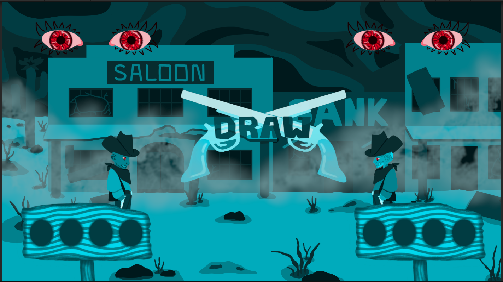

Music Compositions
-
mRNAdventure
Cells At Work, theme track for mRNAdventure. Composed and produced in Ableton Live 12. Solve puzzles and learn about mRNA vaccines!
-
Mariposa
Sepia, ambiance track for Mariposa. Composed and arranged in MuseScore 4 for a scraped cutscene of the MC's background story. Play the game!
-
One-Eyed Scribe
High Noon, title track for One-Eyed Scribe. Composed and produced in Ableton Live 12 for a local co-op old Western styled shootout. This is a revised version compared to in-game version. Duel it out!